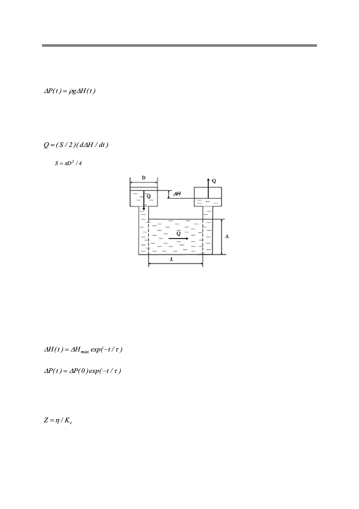

Метод затухающего потока в реологии полимерных пористых пленок, заполненных жидкими
кристаллами
сти уровней ΔН в открытых трубках диаметра D, соединенных каналом (рис.1). Поток соз-
дается за счет медленно уменьшающейся со временем мгновенной разности давления ΔР:
,
(1)
где ρ − плотность жидкости; g − ускорение свободного падения.
Объемная скорость потока Q = dV ⁄ dt одинакова в различных сечениях гидродинами-
ческого контура и может быть выражена следующим образом:
,
(2)
где
− поперечное сечение открытой трубки.
Рис. 1. Схема затухающего потока.
Очевидно, что необходимо определенное время для полного прекращения движения
жидкости, которое зависит от эффективной сдвиговой вязкости ηэфф. В случае изотропной
ньютоновской жидкости значение ηэфф равно коэффициенту сдвиговой вязкости η и не
зависит от скорости потока. При этом значение характерного времени затухания потока τ
можно получить из следующих уравнений:
(3)
,
(4)
где характерное время затухания τ пропорционально гидродинамическому сопротивле-
нию канала Z, которое определяется как:
(5)
с константой Kc, зависящей только от формы и геометрических размеров канала. Соот-
ветствующие выражения для Kc в случаях капилляров с прямоугольным (линейные раз-
меры d × A, d << А) и круговым (радиус r) сечениями можно записываются в виде:
28
Российский технологический журнал 2017 Том 5 № 5